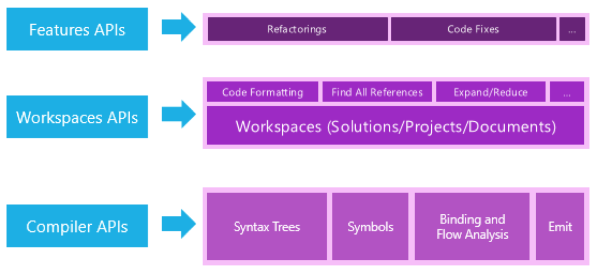

Building Code Analyzers with Roslyn


Roslyn
- compiler as a service (access to compiler APIs)
- facilitates code analysis (ASTs, semantic model)
- facilitates building C# tooling
- Apache 2.0

Code Analysis
C# Program
class Program
{
}
Syntax Tree

Rewrite a Syntax Tree
var tree = await document.GetSyntaxRootAsync();
var newTree = tree.DescendantNodesAndSelf().
OfType<ClassDeclarationSyntax>().
First().AddMembers(
SyntaxFactory.MethodDeclaration(
SyntaxFactory.PredefinedType(SyntaxFactory.Token(
SyntaxKind.VoidKeyword)),
SyntaxFactory.Identifier("Main"))
.WithModifiers(SyntaxFactory.TokenList(SyntaxFactory.Token(
SyntaxKind.StaticKeyword)))
.WithBody(SyntaxFactory.Block())
)
).NormalizeWhitespace();
var newDocument = document.WithSyntaxRoot(newTree);
Modified program
class Program
{
static void Main()
{
}
}
New Syntax Tree

Semantic Model
var tree = await document.GetSyntaxRootAsync();
var classDeclaration = tree.DescendantNodesAndSelf().
OfType<ClassDeclarationSyntax>().First();
var semanticModel = await document.GetSemanticModelAsync();
var typeSymbol = semanticModel.GetDeclaredSymbol(classDeclaration);
var references = await SymbolFinder.FindReferencesAsync(document.Project.Solution,
typeSymbol);
// process references
Building stuff!
Analyzers

Code fixes

Refactorings
Roslyn Features API
| Find issue | Change code | Diagnostic | Distribution | |
|---|---|---|---|---|
| Analyzer | 🔍 | 🦄 |   |
|
| Code fix | 🔧 | 🦄 | |
|
| Refactoring | 🔧 | |
Show me the code!
Links
Tools
- Syntax Visualizer in Visual Studio
https://github.com/dotnet/roslyn/wiki/Syntax-Visualizer - Roslyn Quoter web app
http://roslynquoter.azurewebsites.net
Projects
- Stylecop Analyzers
https://github.com/DotNetAnalyzers/StyleCopAnalyzers - Refactoring Essentials
https://github.com/icsharpcode/refactoringessentials - Codecracker
https://github.com/code-cracker/code-cracker - Official Roslyn Analyzers
https://github.com/dotnet/roslyn-analyzers